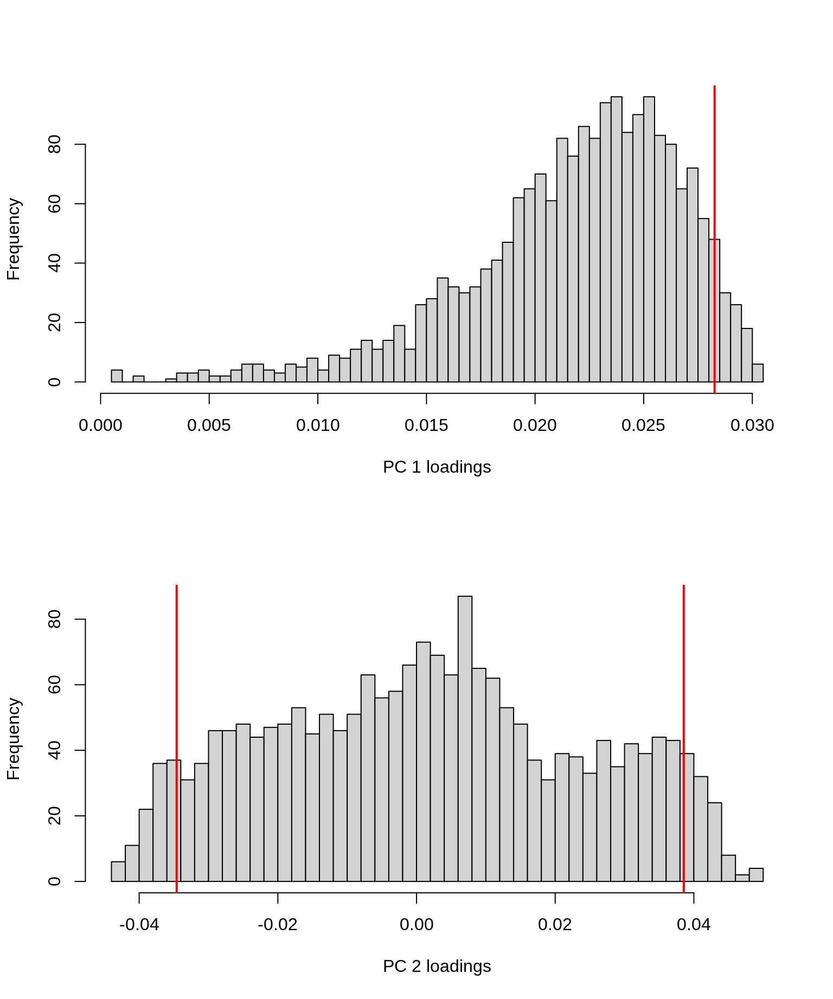
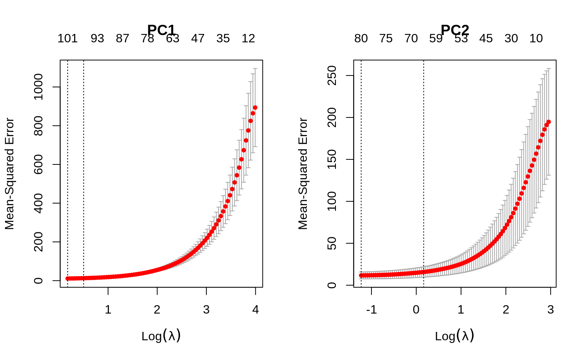
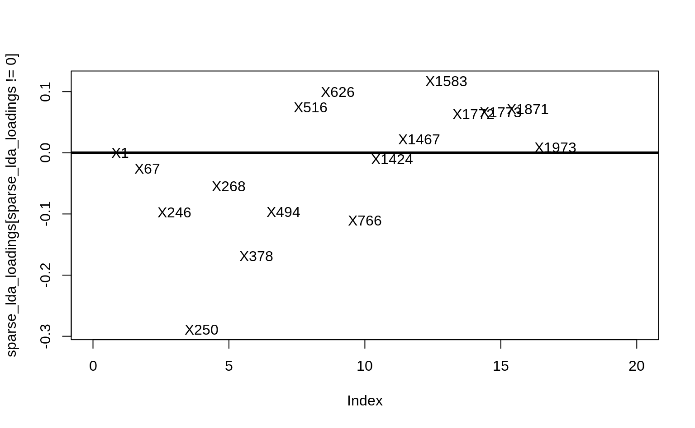

Lab 4: Sparse PCA and LDA
High Dimensional Data Analysis practicals
Adapted by Milan Malfait
18 Nov 2021
(Last updated: 2021-11-26)
1 Introduction
In this lab session we will look at the following topics
- Methods to set some of the loadings exactly to zero in a PCA
- Use
glmnet()to add penalties on principal component loadings - Use LDA to understand differences between groups in a high dimensional space
The dataset
In this practical session, we use the dataset by Alon et al. (1999) on gene expression levels in 40 tumour and 22 normal colon tissue samples. They checked a total of 6500 human genes using the Affymetrix oligonucleotide array.
You can load the data in as follows:
data("Alon1999")
str(Alon1999[, 1:10])
#> 'data.frame': 62 obs. of 10 variables:
#> $ Y : chr "t" "n" "t" "n" ...
#> $ X1: num 8589 9164 3826 6246 3230 ...
#> $ X2: num 5468 6720 6970 7824 3694 ...
#> $ X3: num 4263 4883 5370 5956 3401 ...
#> $ X4: num 4065 3718 4706 3976 3464 ...
#> $ X5: num 1998 2015 1167 2003 2181 ...
#> $ X6: num 5282 5570 1572 2131 2923 ...
#> $ X7: num 2170 3849 1325 1531 2069 ...
#> $ X8: num 2773 2793 1472 1715 2949 ...
#> $ X9: num 7526 7018 3297 3870 3303 ...
table(Alon1999$Y)
#>
#> n t
#> 22 40The dataset contains one variable named Y with the values t and n. This variable indicates whether the sample came from tumourous (t) or normal (n) tissue. For more information on this dataset, see ?Alon1999.
The goal of this practical is to find the best subset/combination of genes to detect tumourous tissue. As in Alon et al. (1999), we use the 2000 genes with the highest minimal intensity across the samples.
2 Sparse PCA
In order to work easily with the data, first construct a scaled matrix X and a vector Y which gives the scaled predictors and the response variable:
Use these objects to solve the following exercises.
Exercises
1. Perform a SVD on X, and store the scores of the PCs in a matrix Z.
2. Plot the singular values and confirm that the first and second PCs can approximate the data to some extent.
Solution
## Plotting parameters
par(pch = 19, mfrow = c(1, 2))
plot(svd_X$d, type = "b", ylab = "Singular values", xlab = "PCs")
## Percentage variance explained for each PC
var_explained <- svd_X$d^2 / sum(svd_X$d^2)
plot(var_explained,
type = "b", ylab = "Percent variance explained", xlab = "PCs",
col = 2
)3. Plot the first two PCs and use different colours for tumor/normal tissue.
In order to plot different colors and add a legend with base R plotting, you can do the following:
par(mfrow = c(1, 1))
cols <- c("n" = "red", "t" = "blue")
plot(X[, 1], X[, 2], col = cols[Y], pch = 19)
legend("topleft", c("Normal", "Tumor"),
col = c("red", "blue"),
pch = 19, title = "Tissue"
)This plots the first two dimensions of the X (!) matrix with solid points (pch = 19), and the color red for normal tissue and blue for tumorous tissue. You can adapt this code to create the proper plot.
Solution
cols <- c("n" = "red", "t" = "blue")
plot(Z[, 1], Z[, 2],
col = cols[Y],
xlab = "PC1", ylab = "PC2", pch = 19
)
legend("topleft", c("Normal", "Tumor"),
col = c("red", "blue"),
pch = 19, title = "Tissue"
)Interpretation: using only the first 2 PCs does not seem to separate the tumour and normal cases clearly.
4. Plot histograms of the loadings of the first and second PCs. Which loadings are the most important?
You can use the hist function to plot a histogram. Be sure to you use an appropriate value for the breaks argument.
Solution
par(mfrow = c(2, 1))
# First
hist(V[, 1], breaks = 50, xlab = "PC 1 loadings", main = "")
# Add vertical line at 95% quantile
abline(v = quantile(V[, 1], 0.95), col = "red", lwd = 2)
# Second
hist(V[, 2], breaks = 50, xlab = "PC 2 loadings", main = "")
abline(v = c(
quantile(V[, 2], 0.05),
quantile(V[, 2], 0.95)
), col = "red", lwd = 2)
Vertical lines were added at the 95th percentile for PC1 and the 5th and 95th percentiles for PC2 to reflect where the “highest” (in absolute value) loadings are situated (no negative loadings for PC1, so only showing the 95th percentile).
Interpretation: remember that the PC loadings reflect the contributions of each feature (in this case: gene) to the PC. From these histograms it should be clear that only a minor fraction of the genes are really driving these first 2 PCs, especially for PC 2 (where the bulk of genes has loadings close to 0).
5. We know that the first PC \(\mathbf{Z_1}\), is given by
\[ \mathbf{Z_1}=\mathbf{X} \mathbf{V_1} \]
Where \(\mathbf{V_1}\) are the loadings of the first PC. If we put this in regression notation, we get
\[ \mathbf{Y}=\mathbf{X}\boldsymbol{\beta} \]
where \(\boldsymbol{\beta}\) now represent the \(\mathbf{V_1}\) loadings, and \(\mathbf{Y}\) is \(\mathbf{Z_1}\).
Recall that the ridge regression solution for \(\boldsymbol{\beta}\) is given by
\[ \boldsymbol{\beta}_{\text{ridge}} = (\mathbf{X^TX}+\lambda\mathbf{I})^{-1}\mathbf{X}^T\mathbf Y \]
Question: Replace \(\mathbf{Y}\) with \(\mathbf{Z_1}\) and verify in R that
\[ \mathbf V_1 = \frac{\boldsymbol\beta_{\text{ridge}}}{\|\boldsymbol\beta_{\text{ridge}}\|_2} \]
for any \(\lambda > 0\) of your choice. Remember that \(\|\boldsymbol\beta_{\text{ridge}}\|_2 = \sqrt{\sum_{j=1}^p \beta_j^2}\)
Solution
p <- dim(X)[2]
# Let's take a ridiculously large lambda: 200
tXX_lambda_I <- t(X) %*% X + 200 * diag(p)
## This might take a while to calculate
beta_ridge <- solve(tXX_lambda_I) %*% t(X) %*% Z[, 1]
#||beta_ridge||_2
mag_beta_ridge <- sqrt(sum(beta_ridge^2))For comparison, let’s plot \(\boldsymbol\beta_{\text{ridge}} / \|\boldsymbol\beta_{\text{ridge}}\|_2\) against the PC1 loadings \(\mathbf V_1\).
Then you’ve proven that the loadings of the PCs can be computed from the ridge regression coefficients.
We can now move on to sparse PCA, where we use penalised regression to set some of the loadings (\(\boldsymbol{\beta}\)s) to zero.
6. We have seen elastic net type penalties. If we call the loadings of the first PC as \(\boldsymbol{\beta}\) and denote PC1 as \(\mathbf{Y}\), we saw that \(\boldsymbol{\beta}\) can be derived by minimising the SSE:
\[ \text{SSE}=\|\mathbf Y-\mathbf{X}\boldsymbol \beta\|^2_2+\lambda\|\boldsymbol \beta\|^2_2 (\text{ for any } \lambda>0). \]
Note that this equality holds for any positive \(\lambda\). So we can’t penalise the \(\boldsymbol\beta\)s not being zero by choosing a different \(\lambda\). Remember that for ridge regression, the \(\beta\)’s only become 0 for \(\lambda = \infty\). Fortunately we have other tools.
In addition to the \(L_2\) penalization, we can use the \(L_1\) penalization of Lasso. This allows us to force some of the \(\boldsymbol\beta\)s to become zero. The new SSE will be of the form:
\[ \text{SSE}=\|\mathbf Y-\mathbf{X}\boldsymbol \beta\|^2_2+\lambda_2\|\boldsymbol \beta\|^2_2 +\lambda_1\|\boldsymbol \beta\|_1. \]
This is exactly the elastic net SSE, and \(\lambda_1\) is the Lasso type penalty that sets loadings to zero.
Now use the glmnet and cv.glmnet functions to select an appropriate number of non-zero loadings for the first and second PCs. Use alpha = 0.5 in your elastic net models and use Z1 and Z2 as the response variables (you should fit 2 separate models).
Solution
par(mfrow = c(1, 2))
# For PC1
set.seed(45)
fit_loadings1 <- cv.glmnet(X, Z[, 1],
alpha = 0.5, nfolds = 5
)
plot(fit_loadings1, main = "PC1")
# For PC2
set.seed(45)
fit_loadings2 <- cv.glmnet(X, Z[, 2], alpha = 0.5, nfolds = 5)
plot(fit_loadings2, main = "PC2")
To see how many features are important for each fit, we can make coefficient profile plots. Note that the actual glmnet fit objects are included in the cv.glmnet objects under $glmnet.fit.
I added vertical dashed lines at lambda.min and lambda.1se.
par(mfrow = c(2, 1))
plot(fit_loadings1$glmnet.fit, main = "PC1", xvar = "lambda")
abline(v = log(fit_loadings1$lambda.min), lty = 3)
abline(v = log(fit_loadings1$lambda.1se), lty = 3)
plot(fit_loadings2$glmnet.fit, main = "PC2", xvar = "lambda")
abline(v = log(fit_loadings2$lambda.min), lty = 3)
abline(v = log(fit_loadings2$lambda.1se), lty = 3)
To get the exact number of non-zero coefficients for lambda.min and lambda.1se, just print the cv.glmnet objects.
fit_loadings1
#>
#> Call: cv.glmnet(x = X, y = Z[, 1], nfolds = 5, alpha = 0.5)
#>
#> Measure: Mean-Squared Error
#>
#> Lambda Index Measure SE Nonzero
#> min 1.195 83 10.88 1.888 101
#> 1se 1.655 76 12.68 1.742 96
fit_loadings2
#>
#> Call: cv.glmnet(x = X, y = Z[, 2], nfolds = 5, alpha = 0.5)
#>
#> Measure: Mean-Squared Error
#>
#> Lambda Index Measure SE Nonzero
#> min 0.2923 91 11.70 4.123 80
#> 1se 1.1800 61 15.79 6.171 67Interpretation: for PC1, we see that around 90 to 100 genes are most important, based on the range of \(\lambda\) (lambda) values between lambda.min and lambda.1se. Similarly, for PC2 we get around 65 - 80 genes. With this information, we can now choose one of the lambda values and construct PCs that will have non-zero loadings for only a few genes.
7. Plot your newly derived first and second PCs and use different colors for the tumor and normal tissues. How well do these new PCs separate the response classes? Compare this to the plot in exercise 3. Formulate a conclusion based on the two graphs.
Use lambda.1se as your choice for \(\lambda\). You can extract the coefficients (\(\beta\)’s) from the cv.glmnet objects using the coef function, set the s argument to the chosen \(\lambda\). This will return a sparse matrix by default, so you might want to use as.vector to convert to a more friendly format.
Solution
sparse_loadings1 <- as.vector(coef(fit_loadings1, s = fit_loadings1$lambda.1se))
sparse_loadings2 <- as.vector(coef(fit_loadings2, s = fit_loadings2$lambda.1se))
## How many non-zero loadings do we have (excluding the intercept)?
(non_zero1 <- sum(abs(sparse_loadings1[-1]) > 0))
#> [1] 96
(non_zero2 <- sum(abs(sparse_loadings2[-1]) > 0))
#> [1] 67
SPC1 <- X %*% sparse_loadings1[-1] # without the intercept
SPC2 <- X %*% sparse_loadings2[-1] # without the intercept
par(mfrow = c(1, 2))
plot(Z[, 1], Z[, 2],
col = cols[Y], xlab = "PC1", ylab = "PC2", pch = 16,
main = "All 2000 genes \nfor PC1 and PC2"
)
legend(-45, -25,
legend = c("Normal tissue", "Tumor tissue"), bty = "n",
col = c("red", "blue"), pch = c(16, 16), cex = 1
)
plot(SPC1, SPC2,
col = cols[Y], xlab = "SPC1", ylab = "SPC2", pch = 16,
main = paste(non_zero1, "genes for SPC1 \n and", non_zero2, "genes for SPC2")
)
legend(-45, -25,
legend = c("Normal tissue", "Tumor tissue"), bty = "n",
col = c("red", "blue"), pch = c(16, 16), cex = 1
)
Conclusion: Only about 4.80% (96) of the genes are useful for PC1 and only about 3.35% (67) of the genes are useful for PC2 . Sparse PCA has succeeded in setting the uninformative genes/loadings to zero. In seperating normal and tumour tissues, SPCA performs vitually the same as PCA. The key point here is that SPCA uses only a minor proportion of the original features to achieve the same results, suggesting that the largest variability of the data is only driven by a minority of features.
3 LDA
In this section, we will perform LDA on the gene data to get a clear understanding on the genes responsible for separating the tumor and normal tissue groups.
Remember that the LDA problem can be stated as
\[ \mathbf{v} = \text{ArgMax}_a \frac{\mathbf{a^T B a}}{\mathbf{a^T W a}} \text{ subject to } \mathbf{a^T W a} = 1 \]
Which is equivalent to the eigenvalue/eigenvector problem
\[ \mathbf W^{-1} \mathbf B \mathbf a=\lambda \mathbf a \]
In our case, where we only have two groups, only one solution exists. This is the eigenvector \(\mathbf v\) and its eigenvalue. We can then write the PC-scores as
\[ \mathbf Z=\mathbf X \mathbf v \]
Exercises
1. The function lda() in the MASS package performs LDA. Similar to the glmnet() function, you will need to supply an x argument. The argument grouping is the vector with the response, and this has to be a factor variable. You have that stored as Y. Fit an LDA on X with grouping Y.
2. \(\mathbf v\) can be extracted from the object as the element scaling. Extract this and call it V1.
4. Now check to see how well your single LDA/Z1 separates the tumour and normal tissues groups. Compare it to the plot in (3) of the previous exercise, and observe whether LDA performs better in separating the two groups.
You could use a boxplot for visualization, but feel free to be creative!
5. As was the case with the first and second PC, Z1 is a linear combination determined by the loadings \(\mathbf v\). These are non-zero for all genes. To get a few interesting genes, you can use a sparse LDA. Note that you can use the package sparseLDA with the function sda() to perform this analysis, but let’s do this as we did for sparse PCA.
- Use the
cv.glmnetfunction withx=X,y=Z1andalpha=0.5to select an appropriate number of non-zero genes for the LDA.
- Check to see how well this subset of genes does in separating the tumour and normal tissue groups. Are they as effective as the entire set of genes?
Solution
sparse_lda_loadings <- as.vector(
coef(lda_loadings, s = lda_loadings$lambda.1se)
)
# See the genes involved
plot(sparse_lda_loadings[sparse_lda_loadings != 0],
pch = 16, type = "n", xlim = c(0, 20)
)
text(
sparse_lda_loadings[sparse_lda_loadings != 0],
colnames(X)[sparse_lda_loadings != 0]
)
abline(h = 0, lwd = 3)
# without the intercept
SLDA <- X %*% sparse_lda_loadings[-1]
# number of non-zero loadings
n_nonzero <- sum(sparse_lda_loadings != 0)
# boxplots
par(mfrow = c(1, 2))
boxplot(Z1 ~ Y,
col = cols, ylab = "LDA",
main = "Entire set of 2000 genes"
)
boxplot(SLDA ~ Y,
col = cols, ylab = "SLDA",
main = sprintf("Subset of %d genes", n_nonzero)
)For a simple explanation of the concept and interpretation of LDA (and other statistical methods), have a look at https://www.youtube.com/watch?v=azXCzI57Yfc
Session info
Session info
#> [1] "2021-12-01 15:32:08 UTC"
#> ─ Session info 👍🏻 🏐 💗 ─────────────────────────────────────────────────
#> hash: thumbs up: light skin tone, volleyball, growing heart
#>
#> setting value
#> version R version 4.1.2 (2021-11-01)
#> os macOS Catalina 10.15.7
#> system x86_64, darwin17.0
#> ui X11
#> language (EN)
#> collate en_US.UTF-8
#> ctype en_US.UTF-8
#> tz UTC
#> date 2021-12-01
#> pandoc 2.7.3 @ /usr/local/bin/ (via rmarkdown)
#>
#> ─ Packages ───────────────────────────────────────────────────────────────────
#> ! package * version date (UTC) lib source
#> P bslib 0.3.0 2021-09-02 [?] CRAN (R 4.1.2)
#> P cli 3.1.0 2021-10-27 [?] CRAN (R 4.1.0)
#> P codetools 0.2-18 2020-11-04 [?] CRAN (R 4.1.2)
#> P digest 0.6.28 2021-09-23 [?] CRAN (R 4.1.0)
#> P evaluate 0.14 2019-05-28 [?] CRAN (R 4.1.0)
#> P fastmap 1.1.0 2021-01-25 [?] CRAN (R 4.1.0)
#> P foreach 1.5.1 2020-10-15 [?] CRAN (R 4.1.0)
#> P glmnet * 4.1-2 2021-06-24 [?] CRAN (R 4.1.0)
#> P HDDAData * 0.0.2 2021-11-17 [?] Github (statOmics/HDDAData@d6ab354)
#> P highr 0.9 2021-04-16 [?] CRAN (R 4.1.0)
#> P htmltools 0.5.2 2021-08-25 [?] CRAN (R 4.1.0)
#> P iterators 1.0.13 2020-10-15 [?] CRAN (R 4.1.0)
#> P jquerylib 0.1.4 2021-04-26 [?] CRAN (R 4.1.0)
#> P jsonlite 1.7.2 2020-12-09 [?] CRAN (R 4.1.0)
#> P knitr 1.33 2021-04-24 [?] CRAN (R 4.1.0)
#> P lattice 0.20-45 2021-09-22 [?] CRAN (R 4.1.2)
#> P magrittr 2.0.1 2020-11-17 [?] CRAN (R 4.1.0)
#> P MASS * 7.3-54 2021-05-03 [?] CRAN (R 4.1.2)
#> P Matrix * 1.3-4 2021-06-01 [?] CRAN (R 4.1.2)
#> P R6 2.5.1 2021-08-19 [?] CRAN (R 4.1.0)
#> P renv 0.14.0 2021-07-21 [?] CRAN (R 4.1.0)
#> P rlang 0.4.11 2021-04-30 [?] CRAN (R 4.1.0)
#> P rmarkdown 2.10 2021-08-06 [?] CRAN (R 4.1.2)
#> P sass 0.4.0 2021-05-12 [?] CRAN (R 4.1.0)
#> P sessioninfo 1.2.1 2021-11-02 [?] CRAN (R 4.1.0)
#> P shape 1.4.6 2021-05-19 [?] CRAN (R 4.1.0)
#> P stringi 1.7.4 2021-08-25 [?] CRAN (R 4.1.2)
#> P stringr 1.4.0 2019-02-10 [?] CRAN (R 4.1.0)
#> P survival 3.2-13 2021-08-24 [?] CRAN (R 4.1.2)
#> P xfun 0.25 2021-08-06 [?] CRAN (R 4.1.2)
#> P yaml 2.2.1 2020-02-01 [?] CRAN (R 4.1.0)
#>
#> [1] /Users/runner/work/HDDA21/HDDA21/renv/library/R-4.1/x86_64-apple-darwin17.0
#> [2] /private/var/folders/24/8k48jl6d249_n_qfxwsl6xvm0000gn/T/Rtmp9FVsOz/renv-system-library
#>
#> P ── Loaded and on-disk path mismatch.
#>
#> ──────────────────────────────────────────────────────────────────────────────References
Alon, Uri, Naama Barkai, Daniel A Notterman, Kurt Gish, Suzanne Ybarra, Daniel Mack, and Arnold J Levine. 1999. “Broad Patterns of Gene Expression Revealed by Clustering Analysis of Tumor and Normal Colon Tissues Probed by Oligonucleotide Arrays.” Proceedings of the National Academy of Sciences 96 (12): 6745–50.